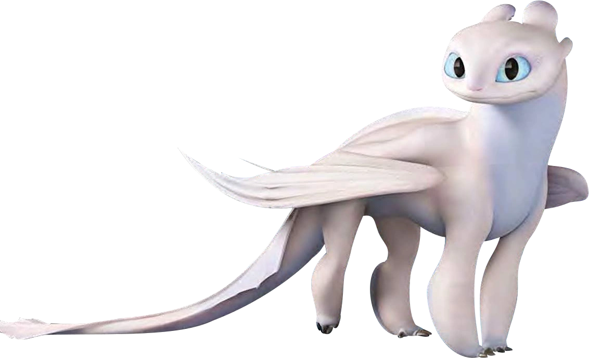
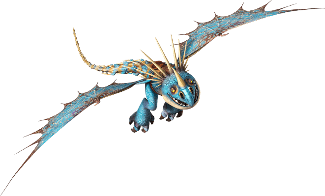
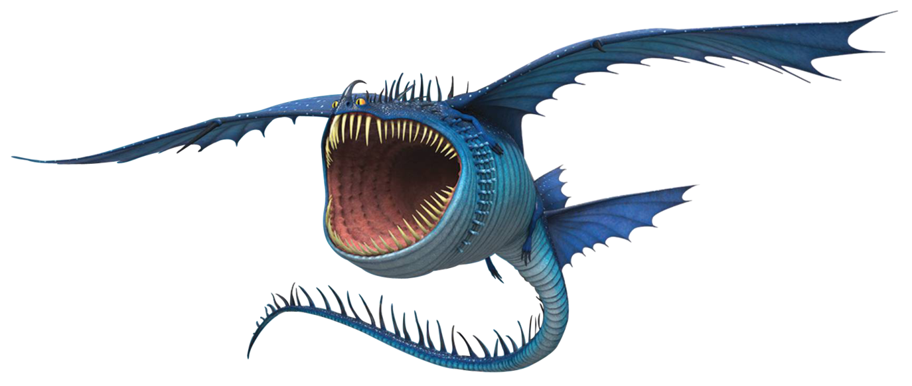
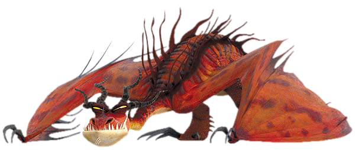

-
Fúria da Noite
Relâmpago

Descrição
O mais Raro e mais Inteligente das espécies de dragão, o Fúria da Noite se distingue por sua cor escura e penetrantes olhos Verdes ou Amarelos, bem como seu tamanho menor, peso e pescoço curto. Possuindo a maior relação de asa-a-corpo de todos os dragões, ele pode voar mais alto, mais rápido e mais longe do que qualquer dragão, e sua relação potêncial-a-peso o torna capaz de realizar decolagem vertical. "Esse dragão é a cria diabólica do raio e da própria morte, não se atreva a enfrentar esse dragão, só há uma chance, esconda-se e reze para que ele não te encontre".
-
Fúria da Luz
Relâmpago
Descrição
Seu Fogo ao ser atirado no céu enquanto voa faz com que ela desapareça, veloz como a luz. No filme é revelado que a Fúria da Luz pode ficar "camuflada" assim como o Transformasa, tanto ao passar pelo seu tiro de plasma quanto utilizar esse seu poder sozinha, ela também possui o tiro de plasma assim como o Fúria da Noite.
-
Nadder Mortal
Rastreadora
Descrição
O Nadder mortal é veloz e perigoso, seus reflexos afiados o empede que seja atingido tão fácil pelos lados e por baixo quanto por cima, embora a sua eficácia como caçador é dificultada pelo ponto cego diretamente a baixo do seu nariz (possivelmente devido à seu grande chifre). Como resultado, o dragão confia em seu olfato afiado, muitas vezes, em vez de sua visão binocular, a fim de encontrar sua presa.
-
Tambor Trovão
Marinha
Descrição
O Tambor Trovão é conhecido assim por seu rugido de ondas sonoras, porque quando abre sua boca você vê seus dentes afiados que são capazes de matar um homem ou destruir um navio. Como o Tambor trovão é um dragão da classe marinha ele é um ótimo nadador. Dizem que esse dragão é considerado um dos mais fortes graças ao seu poder sonoro. As lendas dizem que seu poder vem de Thor.
-
Pesadelo Monstruoso
Fogueira
Descrição
"Não há dragão mais feroz ou temido que o Pesadelo Monstruoso". Este dragão gigantesco tem um pescoço longo, costas e cauda, e é coberto de escamas vermelhas e longos espinhos. O Pesadelo Monstruoso tem uma boca enorme que pode engolir até vikings. Este dragão pode atacar a qualquer hora do dia ou da noite, no ar ou no chão. Ele é muito agressivo, e nunca foge à luta. Seu fogo é espesso e pegajoso, agarrando-se às paredes e descendo colinas como um rio de fogo.
.png)